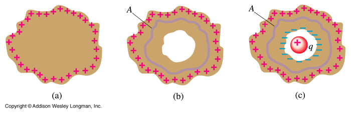

Note that since a conductor contains "free" charges if an electric field exists anywhere in the conductor a current will flow. Thus, in electrostatic conditions ("static" means all charges are at rest) there can be no electric field anywhere in the conductor.
Under electrostatic conditions, E = 0 throughout the object. Applying Gauss's Law to the closed surface A, we conclude that there can be no charge inside A. But the conductor has a net charge. The only possibility is that the charge resides outside the surface A. If we gradually increase the size of A, so that eventually it lies just below the surface of the conductor, the charge must still reside outside A. Therefore, as a consequence of Gauss's Law, any charge placed in a conductor must reside on its surface.
We now hollow out the conductor, changing nothing else. Thus, there is no charge inside the hollowed out conductor, so that E = 0 inside. This fact leads to the necessity for an antenna to pick up radio signals inside a car. Radio waves are comprised of electric and magnetic fields (electromagnetic waves - much more later), which must be received by the radio. But the car is approximately a hollow metallic conductor, which means E = 0 inside. Without an antenna the radio waves cannot be received by the radio. The antenna provides a "shielded channel" to direct the radio signal into the car.

A Faraday cage is a metal container, which is used to shield sensitive electronics from stray electric fields. Fields outside the container cannot penetrate due to the above explanation.
It can be shown mathematically that if Coulomb's Law is not exactly of the inverse square form - 1/r2 then the electric field inside a closed conductor would not be exactly zero. All experiments to date have failed to measure such an electric field, with an accuracy such that we know that the inverse component of r in Coulomb's Law is 2 with an accuracy of 16 decimal places.
Dr. C. L. Davis
Physics Department
University of Louisville
email: c.l.davis@louisville.edu